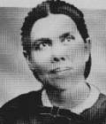
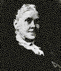
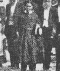
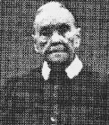

"Picture-idols" according to Ellen G. White
Ellen G. White (EGW) was taken through the homes of people with photographs, room by room while in vision and called the photos she saw "idols". She claimed that these pictures were evil; and by having them the people are helping Satan. Ellen must have helped Satan a great deal as she had a many pictures of herself.
Do you have picture idols in your home?
EGW:"During the night I was sorely distressed. A great burden rested upon me. I had been pleading with God to work in behalf of his people. My attention was called to the money which they had invested in photographs. I was taken from house to house, through the homes of our people, and as I went from room to room, my Instructor said, "Behold the idols which have accumulated!" Advent Review and Sabbath Herald, September 10, 1901, Paragraph 1. Article Title: "No Other Gods Before Me."
Note: I wondered if EGW shut her eyes when she went wandering from room to room in the privacy of people's bedrooms and bathrooms. Just a thought!
EGW:"This making and exchanging of photographs is a species of Idolatry. Satan is doing all he can to eclipse heaven from our view. Let us not help him by making picture-idols. We need to reach a higher standard than these human faces suggest. The Lord says, "Thou shall have no other Gods before me."" Messages to Young People, page 316, paragraph 3, Chapter Title: "Self Gratification. A Species of Idolatry."
EGW:"After going from home to home, and seeing the many photographs, I was instructed to warn our people against this evil. This much we can do for God. We can put these picture-idols out of sight. They have no power for good, but interpose between God and the soul." Messages to Young People, page 318, paragraphs 2 and 3. Chapter Title: "Self Gratification."
EGW: "Every true child of God will be sifted as wheat, and in the sifting process every cherished pleasure which diverts the mind from God must be sacrificed. In many families the mantel-shelves, stands, and tables are filled with ornaments and pictures. Albums, filled with photographs of the family and the photographs of their friends, are placed where they will attract the attention of visitors. ....Is this not a species of idolatry?" Bible Echo and Signs of the Times, January 14, 1901, paragraph 1. Article Title: "No Other Gods Before Me."
EGW: "As I visit the homes of our people and our schools, I see that all the available space on tables, what-nots, and mantlepieces is filled up with photographs. On the right hand and on the left are seen the pictures of human faces. God desires this order of things to be changed. Were Christ on earth, He would say, "Take these things hence." I have been instructed that these pictures are so many idols, taking up the time and thought which should sacredly devoted to God." Messages to Young People, page 316, paragraph 1. Chapter Title: "Self Gratification."
EGW:"We have for years been waging war with spiritual idolatry. ..... I am pained to see the photographs multiplied and hanging everywhere." The Ellen G. White 1888 Materials, page 887, paragraph 3. Chapter Title: "Diary entries."
All along Mother Ellen was having pictures of her and family taken right and left. She loved Idols too! See below.
EGW: "I do not think I shall ever get a picture to equal the one Dunham has made for me. He says I had better have the large one put on a small card. What do you think of this plan?" Letter 17, 1876, p. 2 (To James White, April 30, 1876).
EGW: "Dunham gave me one dozen of these pictures of yours. Shall I send them to you? What do you think of them? I told him I did not like them. They did not look natural, but you can use them. If so let me know." Letter 21, 1876, p. 2 (To James White, May 5, 1876).
Now Mother Ellen gets caught with a lot of pictures and makes a public apology:
EGW:We acknowledge our error. We deeply regret that we ever consented to sit for our pictures. For years I would not consent to have our pictures taken, although solicited to do so. How many times I have wished we had remained steadfast. But all we can do now is to confess our wrong and ask God to forgive us, and entreat the forgiveness of our brethren and sisters." Advent Review and Sabbath Herald, March 26, 1867, paragraph 2. Article Title: "An Acknowledgment."
Note:You should notice that she was caught and repented March 26, 1867, but from the above quotes she was still going strong at making Idols in 1876.
Now for the really good ones:
EGW: "In place of the true test of loyalty, the Church members had manufactured tests of their own on dress and photographic pictures. Interpreting the second commandment to apply even to photographs. Some had burned pictures of their friends"
EGW:"Thus a spirit of criticism, fault-finding, and dissension had come in, which had been a great injury to the church. And the impression was given to unbelievers that Sabbath-keeping Adventists were a set of fanatics and extremists, and that their peculiar faith rendered them unkind, uncourteous, and really unchristian in character." Historical Sketches, p. 211, "Ellen G. White in Europe 1885-1887", page119, paragraph 2. "Problems in the Christiania Church."
Notice that she blames the members of the church for interpreting the 2nd commandment to apply to pictures when she herself had taught it for years, even saying Christ would say, "Take these things hence", and that an Angel had told her in vision that these photographs were Idols. She was a hypocrite to the last. Ellen G. White had been teaching the people this stuff, therefore SHE was the cause of the "Fault Finding, Criticism and dissension in the Adventist Church then and there and also TODAY! Don't you see the same thing going on, especially among those who worship Ellen G. White.
EGW:"If you have your father's pictures, please bring them. I want to show them. My pocket album I left at Healdsburg." Letter 15, 1882, p. 1. (To W. C. White, May 23, 1882).
EGW:"Lathrop is as pleased a man as you ever saw with the pictures, especially of you. He says that she will sell you the negative for five hundred dollars. Beside what we take, it will bring him that much custom. He thinks Ingleson's a flat affair. He [Lathrop] has your picture in the window for show." Letter 1a, 1876, p.1. (To James White, March 24, 1876).
What was on that picture that made it worth $500 to a woman trying to sell it? $500 for one negative! That equals 1000 days wages for the average man in those days! Is this wasting the "Lord's money?"
EGW declared pictures of herself and other people were idols. Every time you see a picture of Ellen G. White, you are looking at the Seventh-day Adventist "idol". All EGW believers should immediately contact the Adventist church to get the pictures of their "idol" removed from all books and church papers. This should include the pictures of church leaders as well.
We know that photos of our families and friends are not idols and nowhere in the Bible does it tell us this. Ellen was wrong in interpreting the second commandment. I do not know of any Christian that bow down and worships photos of family members or friends.
Exo 20:4, 5 (NIV) "You shall not make for yourself an idol in the form of anything in heaven above or on the earth beneath or in the waters below. You shall not bow down to them or worship them;" It is however possible for people to idolize and worship people, such as movie and sports stars. But this is not what Ellen was talking about. She was talking about her pictures and pictures in people's homes of family members.
Now in February 1912 the Photo Hypocrite EGW, leaves her photographs (picture idols) in her will to her two sons.
EGW: NINTH: My household furniture, dishes, carpets, pictures, photographs, and clothing, I give and bequeath in equal parts to by sons, James Edson White and William C. White.
Ellen G. White's Nose Job
I am indebted to Mr. Keith Moxon, editor of Sign Post,Brooklana Bo Bo Valley, Via Ulong N. S. W. 2450, Australia, for the pictures and following article "YET ANOTHER COVER UP." Mr. Moxon was the first to publish Pastor Colcord's statement, which he had received from the Mote collection.
NOSE JOB: YET ANOTHER COVER-UP
The two portraits of Mrs. White on the left are taken from F. C. Gilbert's book, Divine Predictions Fulfilled. The picture to the left is of first of Mrs. White as a young woman, and appears as the front piece to Gilbert's book. The picture in the middle is of the elderly Mrs. White when resident in Australia—both these pictures tell an untruth about Mrs. White's face. In all cases they show a Mrs. White whose nose has been retouched by an artist, giving her a normal appearance that she did not possess. Pastor W. A. Colcord, Secretary of the SDA General Conference around 1891, vigorously protested at the publishing of these pictures, and in letters to Pastor E. S. Ballenger said that Mrs. White had a pug nose with the bridge broken down almost even with the face. In a further Feb. 29, 1928 letter to Ballenger, Colcord wrote:
"I am glad to see you getting after W. C. White and sheeting some things home to him. No doubt he was the one who had his mother's picture doctored up to represent her having a beautiful long, straight nose—the one used as front piece to Gilberts' book, Divine Predictions Fulfilled. That book starts out with a misrepresentation regarding Mrs. White—a misrepresentation which covers up the deformity caused by an all but fatal blow in childhood which later brought on her epilepsy and fits mistaken for visions. And the preface to that book credits W. C. White with having assisted greatly in its production. For many years he has figured in these misrepresentations and defenses of his mother."
The deformity of her face is clearly admitted by Mrs. White herself in autobiographical remarks printed in Gilbert's book on page 45. EGW says that after she had somewhat recovered from the blow that broke her nose: "I was forced to learn the bitter lesson that our personal appearance often makes a difference in the treatment we receive from our companions." This was many months after she had received her injury.
The group picture to the right shows Mrs. 'White in her 'reform dress,' said by her to have been seen in one of her visions. This picture is an enlargement from a much larger group, and un-retouched. There is no nose bridge between EGW's eyes, such as can be seen on other faces. Pugness of the nose is obvious.
The touched up nose job of a young EGW.
Touched up nose job of a 72 year old EGW. Arthur White continued his father Willie's deception by portraying his grandmother with a touched up nose and normal bridge. See, The Early Elmshaven Years, vol. 5, inside cover.
Ellen with a pug nose and wearing her ugly Reform Dress that she required SDA women to wear as a test from God. When women refused to wear it, EGW stopped wearing her dress and then God conveniently removed Ellen's test dress from the SDA women.
Another picture of the elderly Mrs. White with a pug nose.
EGW Lays Down the Law Against Photos
EGW:"These PHOTOGRAPHS cost money. It is inconsistent for us, knowing the work that is to be done at this time, TO SPEND GOD'S MONEY IN PRODUCING PICTURES OF OUR OWN FACES and the faces of friends?..." Messages to Young People, page 316, paragraph 2 "Many SPEND CONSIDERABLE MONEY FOR PHOTOGRAPHS to give their friends" Counsels on Stewardship, page 295, paragraph 1.
EGW WARNED SDAS NOT TO HAVE PHOTO ALBUMS TO SHOW VISITORS IN THEIR HOME
Selected MessagesBook 2, page 317, paragraph 1 and in 1901 Adventist Review and Sabbath Herald, November 26, 1901, paragraph 11 GOD Himself told EGW to warn SDAs against the evils of spending money on photographs, but just before EGW left Australia:
"TWO autograph ALBUMS had been prepared, ONE FOR ELLEN WHITE and one for the W. C. White family. Both were beautifully bound, and EACH CONTAINED original drawings, PHOTOGRAPHS, and messages from the churches and from individuals expressing appreciation, friendship, and love..." Ellen G. White: The Australian Years,Volume 4, 1891-1900, page 458, paragraph 5.
"The brown-toned PHOTOGRAPHS help to tell the story of the work in Australia...There are PICTURES of neat little churches Ellen G. White had visited...THERE ARE PORTRAITS OF FRIENDS, and scenes from her Sunnyside home. One page was reserved for PICTURES OF THEIR WATCHDOG, Tiglath-Pileser, at Sunnyside..." Ellen G. White: The Early Elmshaven Years, Volume 5, 1900-1905, page 19, paragraph 1.
Yet in the 1901 Adventist Review Ellen G. White said God had told her to warn against the evils of spending money on PHOTOGRAPHS. Even though SDAs in Norway were following her advice and actually burning and destroying their own photographs, there is no evidence that EGW ever destroyed one of hers. Obviously she didn't follow the advice God gave her, because photographs and photo albums of herself, her husband, children, family and friends are still on display at "Elmshaven " and in the millions of books distributed around the world.
If showing photo album photos of friends to visitors is a sin, then the photos Adventists show to thousands of visitors to Elmshaven every year should be destroyed. They need to get rid of these "PICTURE IDOLS".
Also the Ellen G. White Estate Website shows "PICTURE IDOLS" of EGW and family, early church leaders and workers. They proudly announce a database of 1200 of these photos.
It is obvious that the White Estate and Elmshaven does not take EGW's admonitions from God as inspired, but they want us to be a believer in her nonsense as well as the SDA publishing houses that pedal books and magazines with "PICTURE IDOLS".
What can you do to help as a loyal believer in EGW? Write the EGW Estate and tell them to destroy all the "PICTURE IDOLS" in their files. Write to SDA Publishing Houses and have them destroy all books and magazines that have "PICTURE IDOLS" in them.
You will also need to destroy all your family albums and wall pictures as they too are "PICTURE IDOLS". If you do not do this then you are an idolater.
Sections
Robert K. Sanders, Founder and Editor of Truth or Fables, 1997–2012
Life Assurance Ministries assumed ownership of Truth or Fables in 2012
© 2016 Life Assurance Ministries. All rights reserved.



